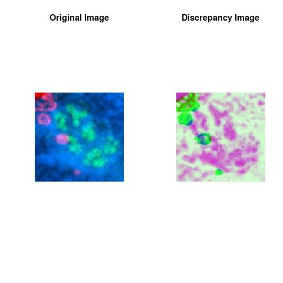

Motivation:
Interesting medical imaging methods have been developed to detect at early stage cancer and other diseases. This will help to speed treatment and reduce the need for invasive, time-consuming biopsies. For instance fluorescent imaging with aim to reveal abnormal situation at the level of a cell is used now routinely by pathologists to clinically classify as early or advanced stage is the abnormality, i.e. to assign subtypes based on major morphologic components and molecular pathology.The development of an accurate platform for quantitative assessment of multiple proteins using immuno-fluorescence imaging combined with image content analysis is an essential help for pathologists.
It is often advantageous for pathologists also to see a cropping sample from the considered image to answer the following question:
-
Q1: How different are some regions of interest from the rest?
This discrepancy image assesses how colors are spatially distributed in the regions of interest of an image, i.e. able to recover the spatial color distribution where the individual regions of interest are either clumped or scarce in the space of colors of the sampled image.
Modern Pathology has now an innovative Discrepancy Image and thanks to the mathematical theory of discrepancy.
Discrepancy Learning Process
Our first framework in data content detection using the framework of the discrepancy analytics is reformulated as an image content analytics framework to assess the question.We use the mathematical framework of discrepancy to establish a data-image structure analysis. Essentially, discrepancy gives a global indication about the non-uniformity of the distribution of RGB colors in the image. The usage of the mathematical framework of discrepancy provides a discrepancy learning process for image analytics that is able to give insights about RGB colors distribution of the pixels and to allow access to many levels of information about image content. This discrepancy learning process is simple to numerically implement without assuming any parametric form in the data. The results showed that this discrepancy learning process captured the reflected pattern in the image with more insights about the colors spatial distribution where the pixel colors are either clumped or scarce. The captured pattern by the discrepancy learning process is called Discrepancy Channel.
Numerical Discrepancy Scanners Using Deep Discrepancy Learning Process
The implementation of the algorithm using the known programming languages ( Java,C++,C#, R) is very straightforward. One way to describe a digital color image is to declare its contents using picture element(pixel) position and their associated RGB colors, each image pixel is represented by 3 coordinates, Red Channel, Green Channel, Blue Channel. Our Discrepancy Learning Process provides the forth channel called called Discrepancy Channel, see images below.
The Discrepancy Channel is considered as an holistic histogram for the considered colors in the image, it allows the interpreter to objectively identify the image content levels:
-
Dark Grey is meaning that the color of the pixel is scarce in the image content.
-
White Grey is meaning that the color of the pixel is dominating in the image content.
The Discrepancy Image is formed by Discrepancy Learning Process as:
-
1-) Considering (Red Channel, Green Channel). The obtained channel is called Discrepancy Channel RG.
-
2-) Considering (Green Channel, Blue Channel). The obtained channel is called Discrepancy Channel GB.
-
3-) Considering (Red Channel , Blue Channel ). The obtained channel is called Discrepancy Channel RB.
-
The Discrepancy Image is the image formed by (Discrepancy Channel RG, Discrepancy Channel GB, Discrepancy Channel RB).


Note
The theoretical part of this work was done when the author was in his PhD thesis (1994-1998), at the University of Savoie, Department of Mathematics, France. The work was shaped toward real applications when the author was a research data scientist(1999-2003) in the Laboratory for Threat Material Detection at the University of New Brunswick, Canada. Since then the work has been extended accordingly to the learned scientific experience.
Author scientific profile:
Statistics and Applied Mathematics for Data Analytics Identify opportunities to apply Mathematical Statistics, Numerical Methods, Machine Learning and Pattern Recognition to investigate and implement solutions to the field of Data Analytics. Data prediction via computational methods to predict from massive amounts of data ( big data). These methods included clustering, regression, survival analysis, neural network, classification and ranking.
Acknowledgements
This work would not have been possible without a strong personal motivation and my Saving or Deferred Consumption.
I would like to thank people that contributed to my scientific formation. I consider this work as my contribution to Make Cancer History and dedicated to all Human, no discrimination on the basis of race, religion, color, national origin, gender, sexual
orientation, age, marital status, veteran status, or disability status.
Author: Faysal.El.Khettabi@gmail.com
Copyright 1994-2017, Numerics&Analytics, All Rights Reserved.
Dark Grey is meaning that the color of the pixel is scarce in the image content.
White Grey is meaning that the color of the pixel is dominating in the image content.
1-) Considering (Red Channel, Green Channel). The obtained channel is called Discrepancy Channel RG.
2-) Considering (Green Channel, Blue Channel). The obtained channel is called Discrepancy Channel GB.
3-) Considering (Red Channel , Blue Channel ). The obtained channel is called Discrepancy Channel RB.
The Discrepancy Image is the image formed by (Discrepancy Channel RG, Discrepancy Channel GB, Discrepancy Channel RB).
Copyright 1994-2017, Numerics&Analytics, All Rights Reserved.